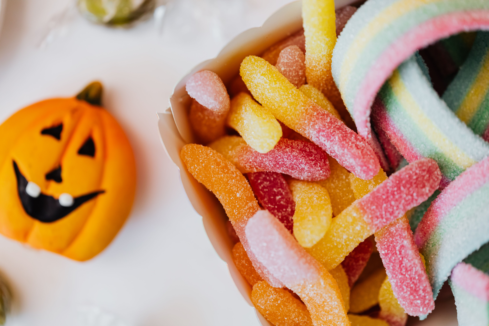

HAPPY HALLOWEEN!
O Halloween é uma festa comemorada no dia 31 de outubro. É conhecido pelas fantasias, decorações assustadoras, brincadeiras e muitos doces!
CONHEÇA AS TRADIÇÕES
Tradições do Halloween
Existem vários costumes que tornam essa comemoração especial. Conheça algumas das tradições mais populares!
🍬 Doces ou travessuras

As crianças colocam fantasias e visitam casas pedindo doces. A frase tradicional é "doces ou travessuras?". Quem participa costuma entregar balas e chocolates.
🎃 Esculpir abóboras

Uma das decorações mais famosas é a abóbora com um rosto assustador. Ela é esculpida e pode receber uma luz dentro, criando um visual típico do Halloween.
🍎 Pescar maçãs com a boca

Nessa brincadeira, as maçãs ficam dentro de uma bacia com água. O objetivo é pegar uma delas usando apenas a boca, sem utilizar as mãos.
👻 Fantasias assustadoras

Bruxas, vampiros, fantasmas e esqueletos são fantasias muito populares. Algumas pessoas preferem personagens engraçados, enquanto outras gostam de assustar os amigos.
🕸️ Decoração de Halloween
Teias de aranha falsas, morcegos, caveiras e abóboras são usados para decorar casas e festas. As cores mais comuns são laranja, preto e roxo.
🌙 Curiosidade sobre o Halloween
O Halloween tem raízes em antigas celebrações europeias e, com o passar do tempo, ganhou costumes que hoje são conhecidos em vários países do mundo.